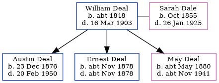

William Deal c1848 - 1903
[ Home ] | [ Calendar ] | [ Surnames Index ] | [ Errors ] | [ Family History ]William Deal, the husband of Sarah Ann Dale (the great-great-aunt of Nigel Horne), was born in Barham, Kent, England c. 18481,2,3, was baptised there on 24 Sept 1848 and married Sarah (a caretaker of bridge union workhouse with whom he had 3 children: Austin Alfred, Ernest and May) at St Mary's Church, Chartham, Kent, England on 11 Nov 18756.
During his life, he was living at Asylum Farm Cottages in Chartham on 3 Apr 18811, at Old Road in Chartham on 5 Apr 18912, and at 14 Asylum Cottages in Chartham on 31 Mar 19017.
He died on 16 Mar 1903 in Canterbury, Kent, England4,5.
Children
- Austin Alfred was born on 23 Dec 1876
- Ernest was born c. Nov 1878
- May was born c. May 1880
Citations
- 1881 England, Wales & Scotland Census - Findmypast (was age 32 and the head of the household)
- 1891 England, Wales & Scotland Census - Findmypast (was age 42 and the head of the household)
- England & Wales deaths 1837-2007 - Findmypast
- England & Wales, FreeBMD Death Index: 1837-1915 Online publication - Provo, UT, USA: The Generations Network, Inc., 2006.Original data - General Register Office. England and Wales Civil Registration Indexes. London, England: General Register Office. © Crown copyright. Published by permission of the Cont
- England & Wales, National Probate Calendar (Index of Wills and Administrations),1861-1941 Online publication - Provo, UT, USA: Ancestry.com Operations Inc, 2010.Original data - Principal Probate Registry. Calendar of the Grants of Probate and Letters of Administration made in the Probate Registries of the High Court of Justice in England. Londo
- England Marriages 1538-1973 - Findmypast
- 1901 England, Wales & Scotland Census - Findmypast (was age 52 and the head of the household)
Notes
Not the one born in Barham, since he was alive in 1911 in Swindon.
Media
England & Wales marriages 1837-2008 Transcription - BMD-M-1875-4-AZ-000078-251
England Marriages 1538-1973 Transcription - R_848405020-2
England Marriages 1538-1973 - R_848405020
1891 England, Wales & Scotland Census - GBC/1891/0005720381
England & Wales marriages 1837-2008 - BMD/M/1875/4/AZ/000086/154
Kent, Canterbury Archdeaconry marriages 1538-1928 - GBPRS/CANT/M/97244480/1
Family Tree
Map
Generated by ged2site. Last updated on Jul 3, 2024
Known Issues
Baptism information not used to determine a parent
No records of living with anyone